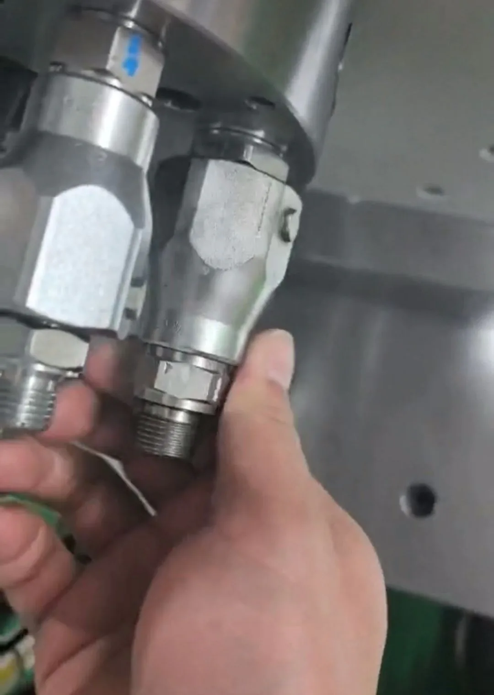
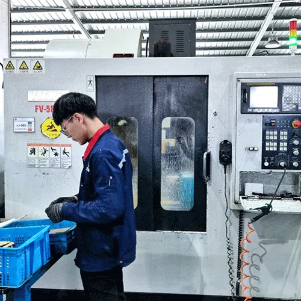
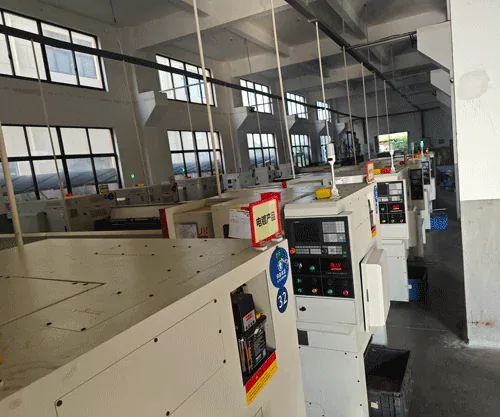

流路数、圧力、回転速度、媒体、取付、スペースが選定へ与える影響を示す実践例。
これは技術選定例であり、公開顧客性能ではありません。最終機種は実際の図面、媒体、運転条件、温度、圧力、回転速度、取付から確認してください。

回転する切断・クランプ部では複数の独立流路が必要な場合があります。流路数は回路図から決定し、酸素、窒素、圧縮空気、クーラントの組合せは装置設計と安全確認で明示的に許可された場合に限ります。
| 選定項目 | 代表的な質問 | Begapunkの検討方針 |
|---|---|---|
| 流路 | 回転部を通過する独立回路はいくつですか？ | 独立流路数を回路数に合わせ、予備流路は根拠がある場合のみ追加。 |
| 圧力・媒体 | 各回路の常用・ピーク圧力は？ | 型式承認前に各媒体・圧力を個別確認。 |
| 回転速度 | 連続回転か間欠割出しか？ | ピーク値だけでなく連続回転速度を使用。 |
| マウント | ねじ式本体かフランジパターンか？ | CADでボルトパターン、ポート方向、スペースを確認。 |
BP-2P-0001は2系統の低圧回路候補です。3系統以上は適合する多流路機種または特注検討が必要です。ガス適合性と安全要件は装置メーカーが確認してください。

塩分、湿度、温度サイクル、困難な保守アクセスは、表面処理、シャフト材、軸受保護、シール、試験計画へ影響します。屋内標準空圧品をそのまま海洋用途へ使用できるとは限りません。
| 必要情報 | 重要な理由 |
|---|---|
| 媒体・濃度 | シール材・金属材の適合性を決定。 |
| 圧力、回転速度、運転条件 | 圧力と回転速度を組み合わせた運転点を定義。 |
| 温度範囲 | エラストマー選定と寸法クリアランスに影響。 |
| 腐食条件・試験規格 | 表面処理、材質、検証要件を決定。 |
| 保全周期 | 軸受保護と保守性に影響。 |
BP-2P-130-0001は高負荷向けの参考機種ですが、そのまま海洋用途に適合するとは限りません。腐食・安全重要用途では図面、材質、検証計画の確認が必要です。

圧力・回転速度が適合しても、ボルトパターン、中空部クリアランス、ホース干渉、固定配管荷重で取付できない場合があります。製作前のCAD確認で寸法リスクを減らせます。
| インフォメーション | 必須確認 |
|---|---|
| 中空部 | シャフト、ドローバー、ケーブル、工具周辺のクリアランス。 |
| 外形・スペース | 本体径、全長、保守アクセス。 |
| マウント | ボルトサークル、ねじ仕様、深さ、位置決め部。 |
| ポート・ホース | 継手サイズ、曲げ半径、外力がないこと。 |
| 運転点 | 媒体、常用圧力、ピーク圧力、回転速度、運転条件。 |
BP-2P-30-0001は中空径30 mmの標準候補です。注文前に最新図面を入手し、装置内の全取合いを確認してください。
Begapunkは、技術的なお問い合わせを迅速に対応することを目指しています。 応答時間は用途の複雑性および提供された情報に依存します。 すべてのお問い合わせで3Dファイルを無料で配布しています。
無料見積依頼 →技術上の注意： 本ページは技術選定例であり、公開済み顧客実績ではありません。結果は用途、環境、保全によって異なります。最終更新：2026年6月11日。